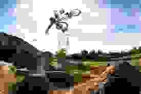

Bmx , а если быть точнее то Bicycle Moto Extreme, означает Вело Мото Экстрим.
Версий о происхождении этого вида спорта очень много, основная - основателем стал американец Gary Turner (Гари Тёрнер) (основатель фирмы GT), который разработал специально для своего сына небольшой велосипед, чтобы тот мог гонять по взрослым мото-трассам. Вот и появился вид великов – bmx и первая дисциплина – рейсинг (racing).
Bmx стал очень популярным, а вот рейсинг многим казался скучным, поэтому сами сабой появились стили: стрит (street), флэт (flat), верт (vert) и дерт (dirt).
BMX Racing появился в 70-х, когда мотокросс стал популярным видом спорта в США. Дети и подростки желали во чтобы то ни стало также участвовать в мотокроссе, поэтому брали свои велосипеды, одевались в экипировку для мотокросса и соревновались на собственноручно построенных трассах, похожих на трассы мотокросса. Соревнования по ВМХ предлагали вдохновляющее действие по низкой цене и часто вблизи от дома. Поэтому легко понять, почему этот вид спорта получил такое распространение. В начале 70-х появился орган управления велосипедным мотокроссом BMX в США. Это событие принято считать официальным стартом ВМХ, а после этого вид спорта был также представлен и на других континентах, среди них в Европе в 1978 году. В апреле 1981 года была основана Международная Федерация ВМХ (IBMXF) и первый чемпионат мира проведён в 1982 году, это почти на 10 лет раньше первого чемпионата мира по горному велосипеду. ВМХ быстро распространился как уникальная спортивная дисциплина и по истечении нескольких лет имел больше признаков велоспорта, чем мотокросса. Таким образом, с января 1993 ВМХ был включён в Международный союз велосипедистов (UCI).[1] В октябре 2003 года на очередном конгрессе Международного союза велосипедистов объявлено, что Международный олимпийский комитет (МОК) включит ВМХ в программу Летних Олимпийских игр 2008 года в Пекине. На этих играх он был представлен одной мужской и одной женской дисциплинами. Первыми Олимпийскими чемпионами стали Марис Штромбергс из Латвии и Анна-Каролина Шоссон из Франции.
первые же соревнования прошли в 1976-78 годах, поэтому совсем нельзя говорить, что bmx – это молодой вид спорта ))). Байки того времени были совсем не похожи на современные bmx, хотя лидерами были GT и Haro. Тормоза тогда были сделаны из пластика, так как хромовых ободов – не было. Первым настоящим фристайл-байком был Haro Sport. У него были опускающиеся пеги, тормоза mags и GYRO (система, которая позволяла вращать руль на 360 градусов, не запутывая тормозные тросики). Пеги тогда наворачивались на ось, что довольно часто приводило к поломке оси. В 1988 байки начинают постепенно переходить на 990е тормоза.
Стрит (с англ. street – улица) - 95% начинающих райдеров выбирают именно его. Стрит разнообразен гриндами (скольжение по граням). Для выполнения трюков используются любые естественные фигуры, которые встречаются на улицах города это перилла, грани, парапеты, лавки, памятники, столики, лестницы и т.д. Стрит – это постоянно развивающийся и свободный стиль. Велосипеды для стрита мало чем отличаются от велосипедов для дертa и вертa, единственное что у большинства нет тормозов и пег. Для этого стиля важен вес велосипеда.
Флэтленд (с англ. flatland – ровная поверхность) это самый безопасный стиль, катаясь в котором, все трюки исполняются на ровной поверхности. Флэтленд заключается в умении хорошо держать равновесие и ловкости. Велосипед для флэтa достаточно лёгок. Не удобен в обычной езде поскольку у него короткая рама. Пеги менее длинные и более толстые, чем у стритовых bmx.
Дерт (с англ. dirt – грязь) – это самый агрессивный, опасный и достаточно зрелищный стиль. Все трюки выполняются в воздухе при вылете с трамплина. Обычно дерт строят из земли, и представляет он собой последовательность земляных трамплинов. Велосипеды для дертa тяжёлые и крепкие. Пег нет, тормоз только задний. В отличии от стритовых, вес здесь не так сильно важен. Главное для dirt-ого велосипеда это большая прочность.
Верт (хаф-пайп) (с англ.- вертикаль)- катание в специальной 90-градусной рампе 4-5 метров. Подразумевает собой высокоамплитудные прыжки и выполнение различных трюков. Велосипеды для верта достаточно тяжёлые и крепкие, используются все 4 пеги и оба тормоза. 